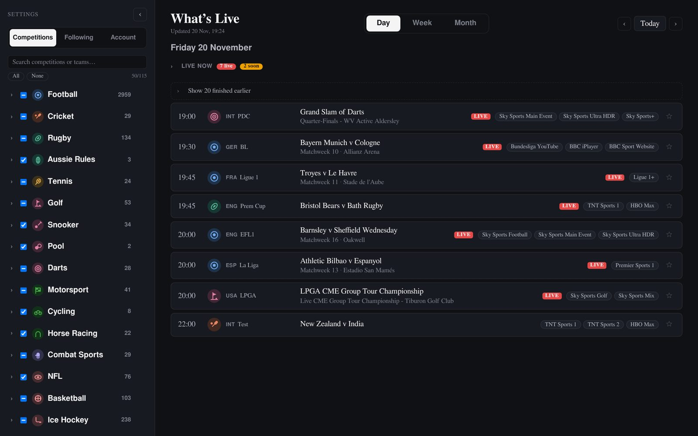

01 / Fantasy football
FPL Outlook
Expected points, clean-sheet odds, predicted line-ups and sell prices, refreshed automatically from five data sources.
Data Team Lead, Gambit Research
51.5072° N · 0.1276° W
Built and run solo
01 / Fantasy football
Expected points, clean-sheet odds, predicted line-ups and sell prices, refreshed automatically from five data sources.

02 / Live sport
Every live sport on UK TV in one calendar, merged with full season schedules and Sky's EPG.